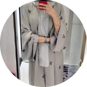

|  | Nahed BahranAssistant professor Department of Electrical Engineering I am an Assistant professor in Hafr Al Batin university Hafr Al Batin university My research area is on Communication Electronics |
| Dates | Work |
|---|---|
| From Nov.2018 until now | As a member staff in Hafr Al Batin university |
| From 2013 to 2017 | Study and pass the required courses for Ph. D preparation, then a full-time research on the subject of the Ph. D thesis, learning and acquiring new skills in electronics, communications and signal and video processing including hardware implementation on FPGA, VHDL, C++, and MATLAB skills at electronic and communication department, faculty of Engineering, Ain Shams university, Cairo, Egypt. |
| From 2009 to 2011 | Study and pass all the requirements of MS. c degree from the Faculty of Engineering, Assiut University, Assiut, Egypt. |
| 2005 to 2008 | Worked as a demonstrator at faculty of Engineering, Ibb university, Ibb, Yemen.During this period, I taught many theoretical and practical courses in the department of electronic Engineering, including the electronic course of the third level. |
| - Computer skills | ⭐ ⭐ ⭐ ⭐ |
| - Communication skills | ⭐ ⭐ ⭐ |
| - Hardware and software design programming languages | ⭐ ⭐ ⭐ ⭐ |
| - VHDL | ⭐ ⭐ ⭐ ⭐ |